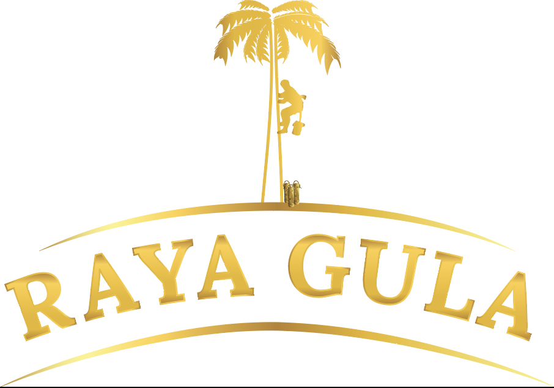
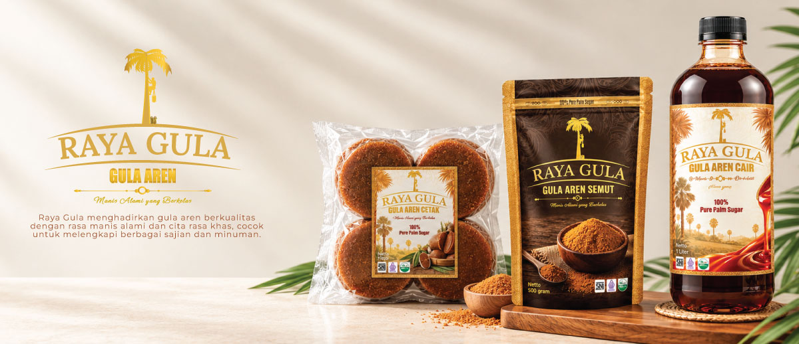
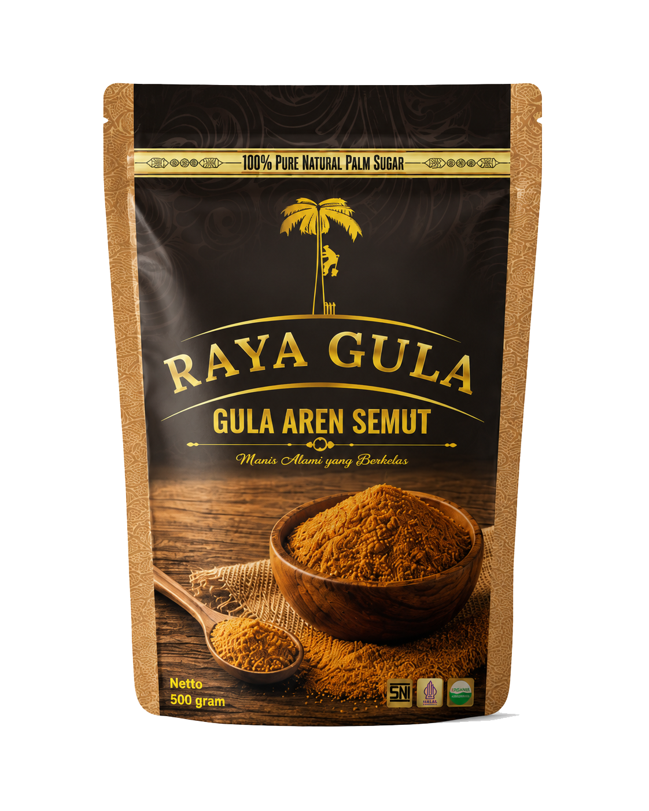
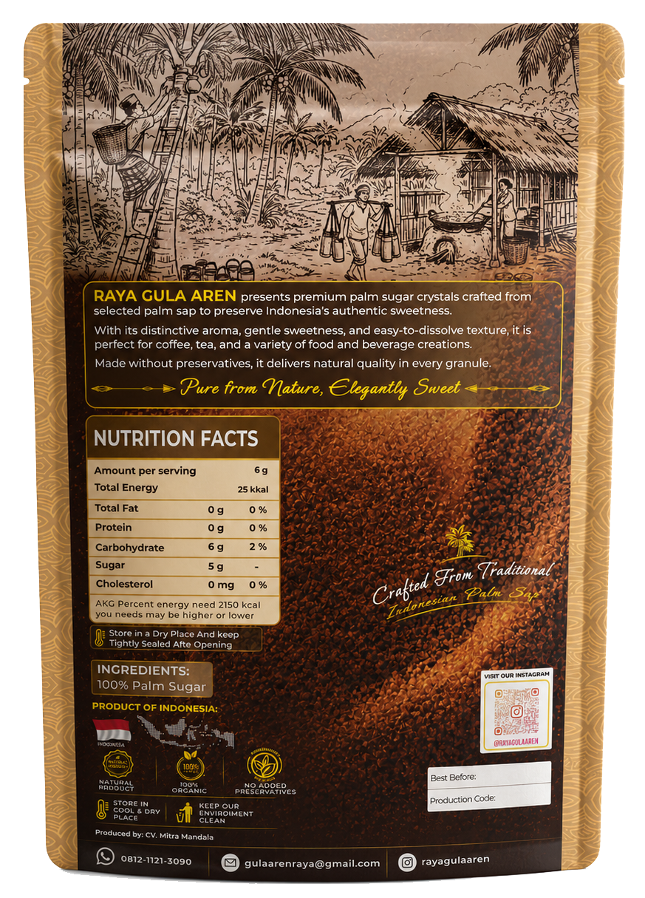

Pemanenan Nira
Nira aren dikumpulkan oleh petani dengan proses yang terjaga.

Hubungi Kami ↗
Raya Gula menghadirkan gula aren Indonesia dari nira pilihan, diolah dengan penuh perhatian untuk mempertahankan rasa alami dan karakter Nusantara di setiap butirnya.
Raya Gula adalah brand gula aren Indonesia yang lahir dari komitmen untuk menjaga karakter gula aren Nusantara sekaligus menghadirkannya dalam bentuk yang modern, praktis, dan berkelas.
Kami percaya bahwa rasa yang baik berawal dari bahan yang baik, proses yang bertanggung jawab, serta penghargaan terhadap petani dan alam tempat nira aren berasal.
Baca selengkapnya →Proses gula aren Raya Gula dimulai dari pemanenan nira, penyaringan, pemasakan, kristalisasi, hingga pengemasan untuk menjaga karakter alami gula aren dari kebun hingga kemasan.
Nira aren dikumpulkan oleh petani dengan proses yang terjaga.
Nira disaring untuk membantu menjaga kualitas bahan baku.
Diolah perlahan hingga karakter aroma dan rasa terbentuk.
Diaduk hingga membentuk kristal gula aren yang halus.
Dikemas dengan standar kebersihan dan kualitas yang terjaga.
Gula aren semut premium Raya Gula menghadirkan rasa manis alami dengan aroma khas Nusantara, cocok untuk kopi, teh, baking, dessert, maupun masakan.


Manis alami yang berkelas.
Gula aren kristal dengan aroma khas dan tekstur praktis untuk penggunaan sehari-hari.
Karakter gula aren menjadi pusat rasa.
Menjaga kualitas dari bahan baku hingga kemasan.
Mengangkat nilai hasil alam dan kerja petani Indonesia.
Halal, Organic, dan SNI sesuai sertifikasi produk.